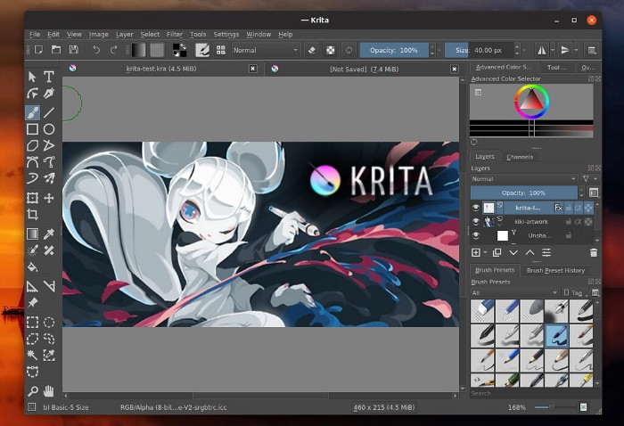
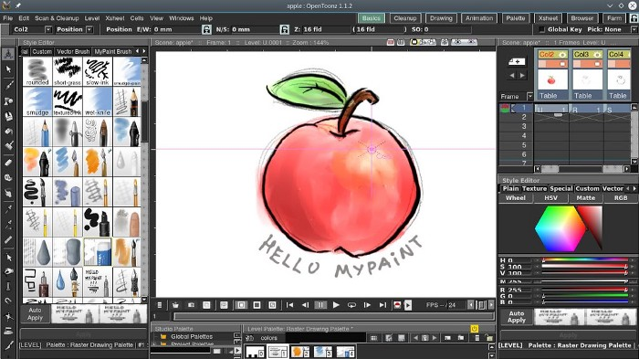

</header>
        <!-- ici, je commence une section de mon site -->
        <section>
            <h2> 1. les logiciels de dessin graphique </h2>
            <p> Les dessins graphiques sont realisés grace a des <strong>logiciels</strong></p>
            <p>voici dans un top 10 de ces logiciels.</p>
            <!-- Un lien vers un article externe -->
            <a href="https://medium.com/@qiwenchong/top-10-des-meilleurs-logiciels-de-dessin-graphique-gratuit-et-peinture-num%C3%A9rique-317941bc1aea">logiciel top 10(lien cliquable)</a>
            <br>
            <!-- Je peux aussi ajouter une image -->
            
            
            
            
        </section>